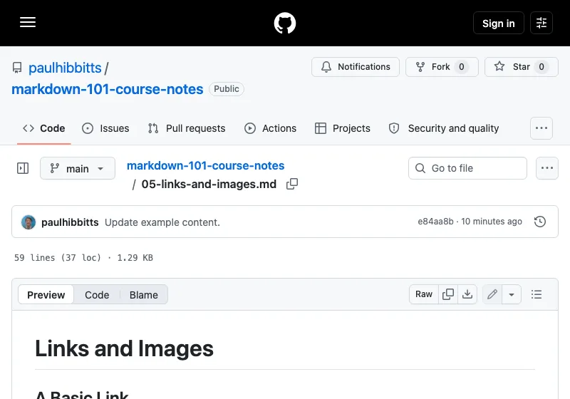
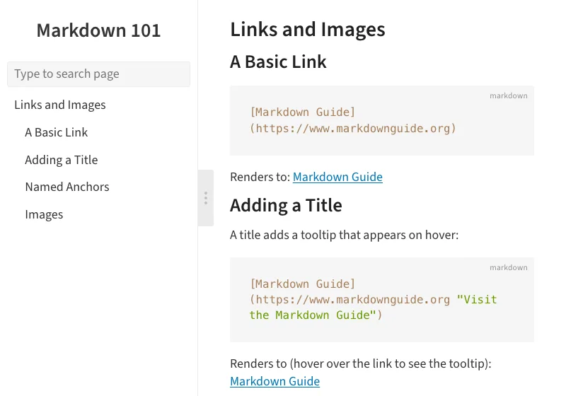

Viewing an Instructor’s GitHub Course Notes with Docsify‑This
If your instructor shares course notes as Markdown files on GitHub or Codeberg, you can use Docsify‑This as a better way to view them.
Get started
First, go to your instructor's repository and open the specific file you want to view – usually README.md, not just the repository's front page. Copy that page's URL (on GitHub, it would look something like https://github.com/username/repo/blob/main/README.md), and paste it into this pre-configured Docsify-This page, then click the Publish as a Web Page button. It only works with public repositories, not private ones.
Before publishing, you can further adjust the page's style – font, colors, layout, and more – by clicking Show More Page Appearance Options » in the Web Page Builder.


What you get with Docsify-This
- Less clutter. Just the content, in a cleaner layout.
- A sidebar and search. Jump to headings, or search the page you're on.
- Works everywhere. Phone-friendly layout, with dark mode if you want it.
- Cleaner formatting. Proper code and tables, and images you can tap to zoom in on.
If page links are not working
Many course notes are organized into folders, one per week or topic, with pages linking to each other (for example, a README.md linking out to unit-1/lesson-1.md, unit-2/lesson-1.md, and so on) – and that's usually the cause. Links from the pre-configured page above already handle this. If you used a different link and hit a "file not found" page, turn on Links Within a Site (enabled by default with the above pre-configured page – under Advanced Web Page Builder Options), or add &relative-paths=true to the end of the link yourself.
Naming a multi-page site
If the repository has multiple pages, set a site name under Website name displayed in Sidebar (under Advanced Web Page Builder Options) – it appears at the top of the sidebar as a link to the course home page, and as your browser tab title, making it easy to tell which course you're viewing.
Keep the page for later
Bookmark it, or share it with classmates – any updates to the repository will show up automatically the next time it loads.
Questions?
See Docsify‑This for the main project page, or get in touch.
Are you an instructor?
A few small additions to your repository make Docsify-This even more useful for your students – like a _sidebar.md for real site-wide navigation. See a live example, or read the full instructor guide for this and other tips on structuring a course notes repo for the best student experience.